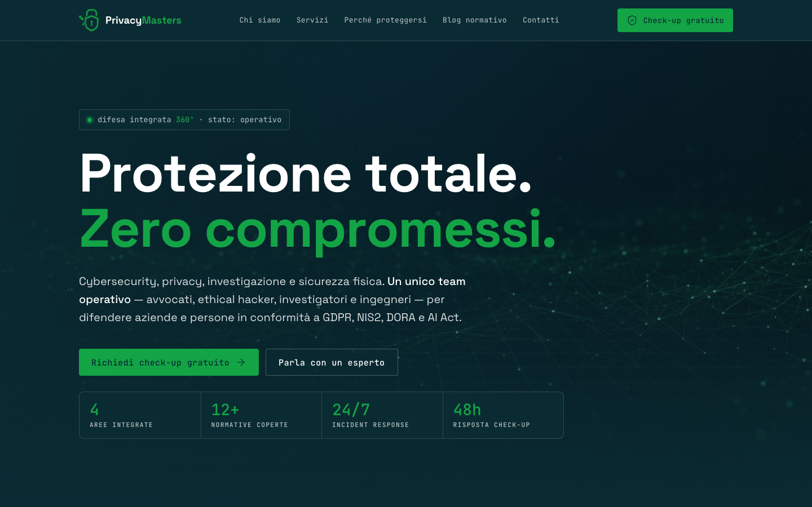

Direzione 1
Command Center
Una sala operativa: fondo petrolio del sito, il verde del logo usato come luce di segnale e dettagli monospace da terminale. Parla a responsabili IT e imprenditori che vogliono percepire competenza tecnica reale e presidio 24/7. È la direzione scura della terna: il verde compare solo come segnale (CTA, cifre, stato), mai come campitura.
Space Grotesk + JetBrains Mono
Cosa corregge del sito attuale
- contrasto CTA principale 2.28 → 4.57 (testo petrolio #0A2B33 su verde #13A445, prima bianco sul vecchio verde menta)
- palette riportata a quella del sito: verde menta e ambra delle versioni precedenti rimossi; etichette 'allerta' ora bianche con icona verde
- testo secondario bianco 72% su petrolio 8.37:1; testo verde #13A445 solo su fondo petrolio pieno (4.57:1), non sulle velature
- hero a 390px: colonna della griglia vincolata (minmax(0,1fr)), badge e readout non escono più dal margine destro; il titolo animato va a capo per parola